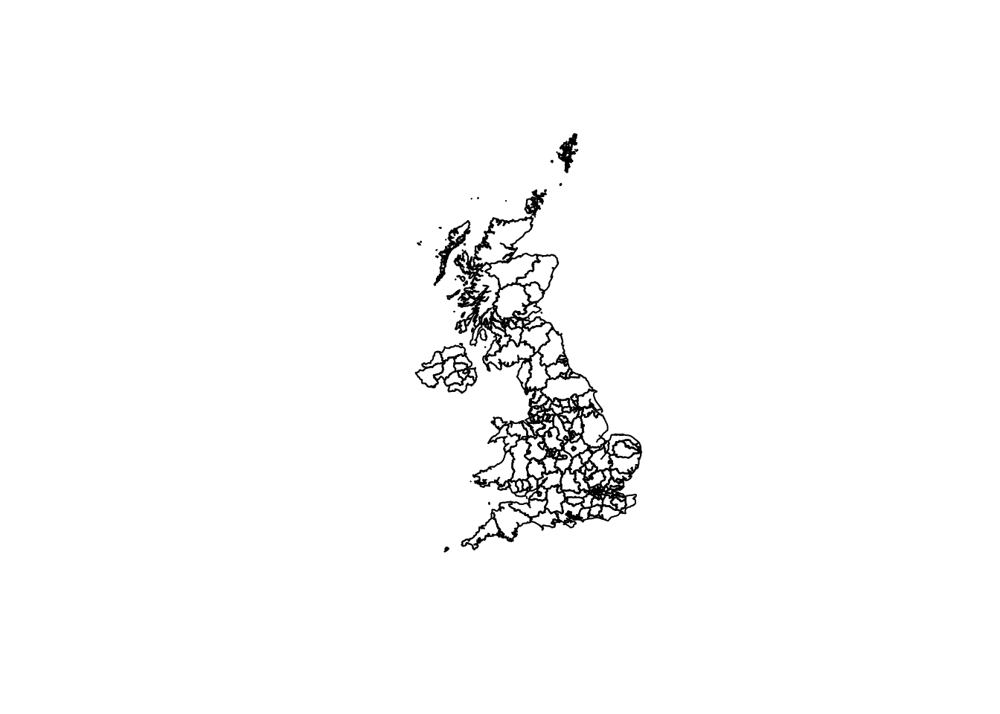
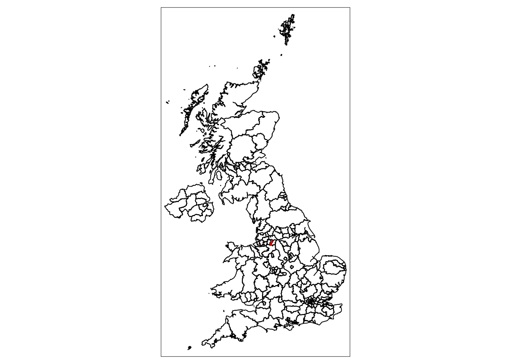
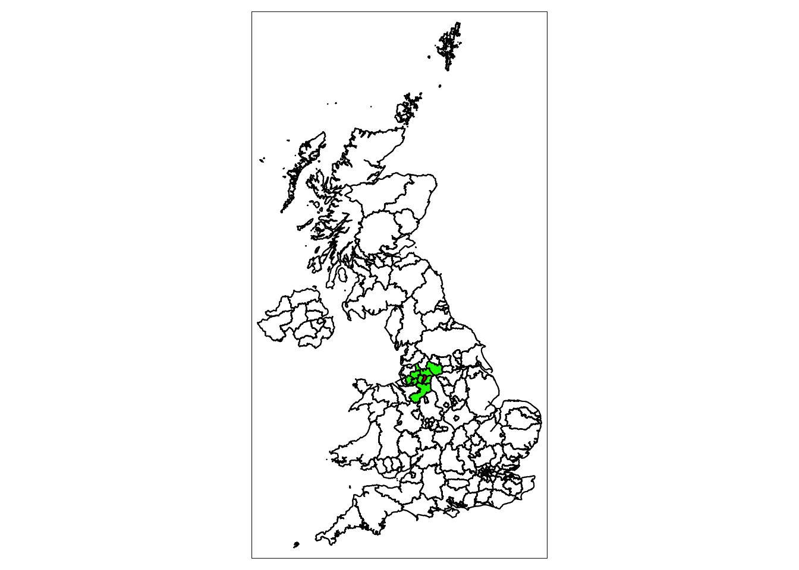
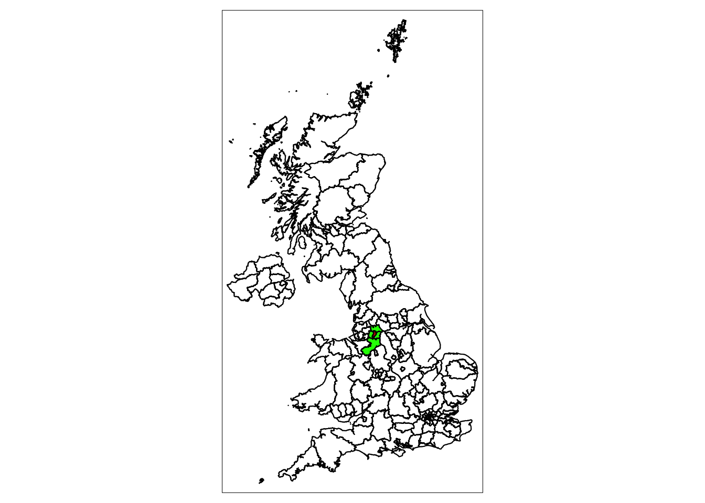
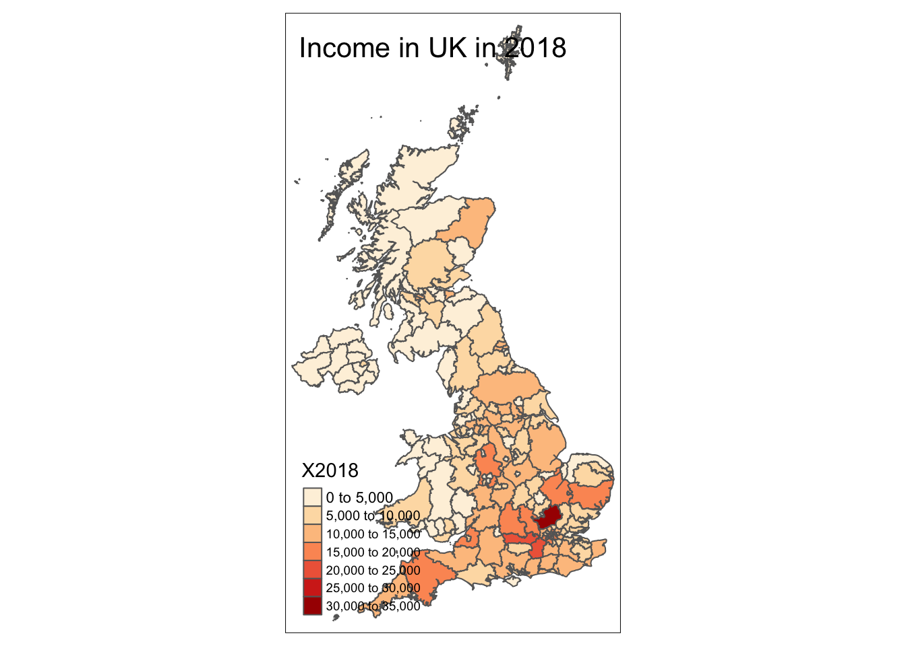
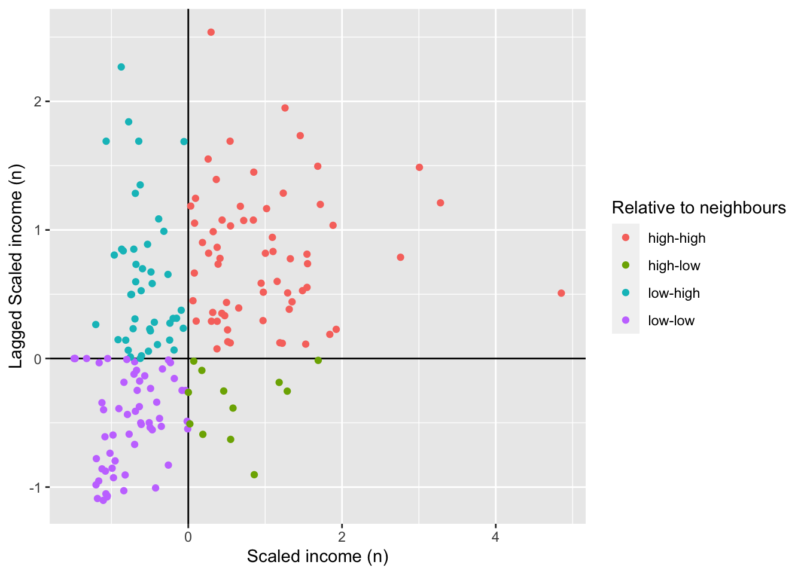
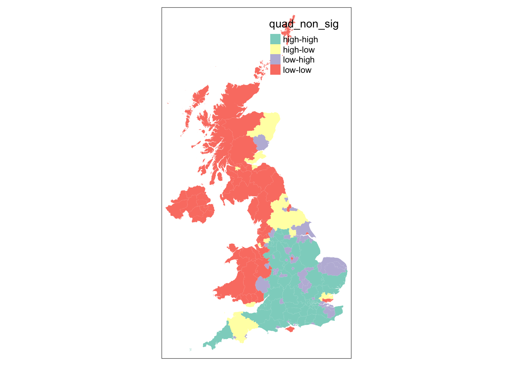
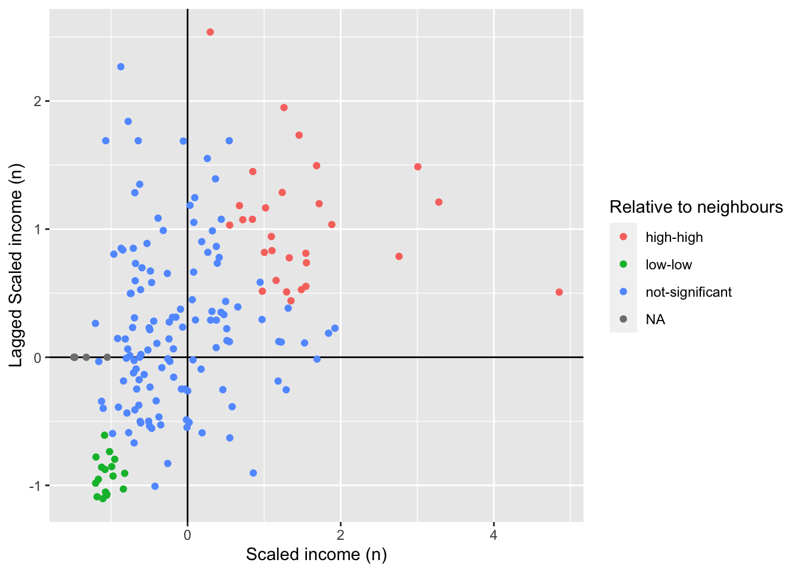
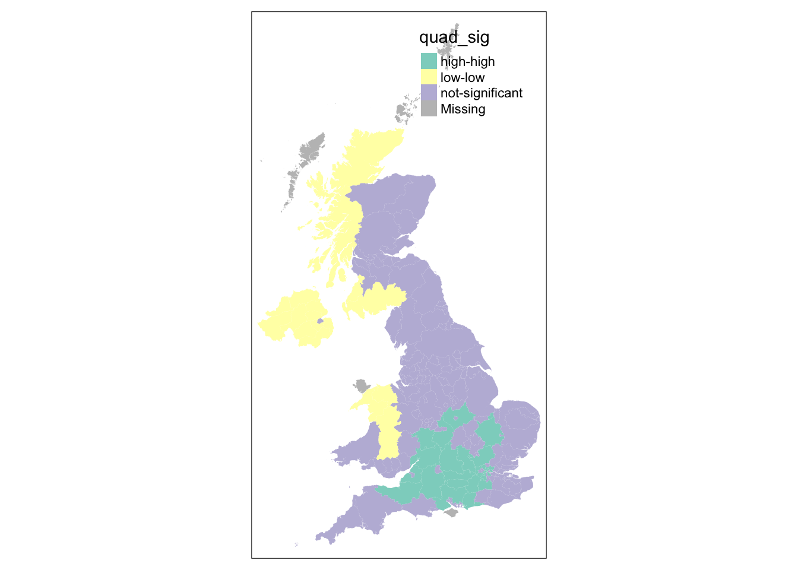

\[\\\\[0.2in]\]
\[\\\\[0.05in]\]
# download packages
library(sf)## Linking to GEOS 3.8.1, GDAL 3.2.0, PROJ 7.2.0library(nngeo)
library(data.table)
library(tmap)uk_oas <- st_read("gdhi_data/nutsl3_gdhi_timeseries.shp",
crs=27700)## Reading layer `nutsl3_gdhi_timeseries' from data source `/Users/huoanni/OneDrive - University College London/geog0114/week_4/class_test/gdhi_data/nutsl3_gdhi_timeseries.shp' using driver `ESRI Shapefile'
## Simple feature collection with 179 features and 33 fields
## geometry type: MULTIPOLYGON
## dimension: XY
## bbox: xmin: -70.2116 ymin: 5337.901 xmax: 655644.8 ymax: 1220302
## projected CRS: OSGB 1936 / British National Griduk_oas %>%
head()## Simple feature collection with 6 features and 33 fields
## geometry type: MULTIPOLYGON
## dimension: XY
## bbox: xmin: 356180.3 ymin: 506231.8 xmax: 478446.1 ymax: 657534.1
## projected CRS: OSGB 1936 / British National Grid
## objectid nuts318cd nuts318nm bng_e bng_n long
## 1 1 UKC11 Hartlepool and Stockton-on-Tees 444952 522016 -1.30587
## 2 2 UKC12 South Teesside 461718 519597 -1.04695
## 3 3 UKC13 Darlington 428029 515649 -1.56835
## 4 4 UKC14 Durham CC 410381 532242 -1.84050
## 5 5 UKC21 Northumberland 395323 600699 -2.07521
## 6 6 UKC22 Tyneside 425849 561221 -1.59801
## lat st_areasha st_lengths NUTS.level Region.nam
## 1 54.59135 298521745 164338.5 NUTS3 Hartlepool and Stockton-on-Tees
## 2 54.56785 298708862 113439.1 NUTS3 South Teesside
## 3 54.53535 197475689 107206.3 NUTS3 Darlington
## 4 54.68513 2231542399 315237.4 NUTS3 Durham CC
## 5 55.30037 5026214898 584227.6 NUTS3 Northumberland
## 6 54.94499 402526821 222232.0 NUTS3 Tyneside
## X1997 X1998 X1999 X2000 X2001 X2002 X2003 X2004 X2005 X2006 X2007 X2008 X2009
## 1 2498 2490 2635 2786 2905 3017 3102 3240 3373 3522 3625 3737 3876
## 2 2572 2477 2593 2746 2859 2868 2910 3020 3121 3247 3298 3361 3527
## 3 953 948 958 1041 1119 1140 1164 1205 1246 1283 1363 1375 1453
## 4 4610 4701 4877 5152 5316 5405 5493 5784 5943 6151 6341 6497 6733
## 5 3163 3204 3373 3605 3726 3819 4004 4120 4246 4501 4644 4933 5246
## 6 7586 7715 7794 8194 8524 8733 8993 9447 9549 9881 10232 10389 10897
## X2010 X2011 X2012 X2013 X2014 X2015 X2016 X2017 X2018
## 1 3965 4086 4223 4261 4416 4529 4567 4767 5008
## 2 3561 3635 3854 3901 4073 4176 4198 4303 4371
## 3 1465 1462 1527 1573 1600 1667 1731 1779 1827
## 4 6977 7077 7340 7519 7766 8059 8100 8314 8717
## 5 5238 5308 5504 5631 5739 5925 6033 6222 6546
## 6 11226 11436 12010 12290 12616 13172 13276 13552 14263
## geometry
## 1 MULTIPOLYGON (((447213.9 53...
## 2 MULTIPOLYGON (((455752.6 52...
## 3 MULTIPOLYGON (((436388 5223...
## 4 MULTIPOLYGON (((428366 5542...
## 5 MULTIPOLYGON (((398583.8 65...
## 6 MULTIPOLYGON (((438059.1 56...# plot(st_geometry(uk_oas))
# install.packages("rmapshaper")
library(rmapshaper)## Registered S3 method overwritten by 'geojsonlint':
## method from
## print.location dplyrlibrary(tidyverse)## ── Attaching packages ─────────────────────────────────────── tidyverse 1.3.0 ──## ✓ ggplot2 3.3.2 ✓ purrr 0.3.4
## ✓ tibble 3.0.4 ✓ dplyr 1.0.2
## ✓ tidyr 1.1.2 ✓ stringr 1.4.0
## ✓ readr 1.4.0 ✓ forcats 0.5.0## ── Conflicts ────────────────────────────────────────── tidyverse_conflicts() ──
## x dplyr::between() masks data.table::between()
## x dplyr::filter() masks stats::filter()
## x dplyr::first() masks data.table::first()
## x dplyr::lag() masks stats::lag()
## x dplyr::last() masks data.table::last()
## x purrr::transpose() masks data.table::transpose()ms_uk_oas <- uk_oas %>%
ms_simplify(., keep = 0.05)
plot(ms_uk_oas$geometry)
# plot(uk_oas$geometry)tm_shape(ms_uk_oas) +
tm_borders(col="black") +
tm_shape(ms_uk_oas[ms_uk_oas$objectid=="10",]) +
tm_fill(col = "red")
library(nngeo)
library(sf)
chosen_oa <- "10"
chosen_oa_neighbours <- st_nn(st_geometry(st_centroid(uk_oas[uk_oas$objectid==chosen_oa,])),
st_geometry(st_centroid(uk_oas)),
sparse = TRUE,
k = 10,
maxdist = 600000) ## Warning in st_centroid.sf(uk_oas[uk_oas$objectid == chosen_oa, ]): st_centroid
## assumes attributes are constant over geometries of x## Warning in st_centroid.sf(uk_oas): st_centroid assumes attributes are constant
## over geometries of x## projected pointsclass(chosen_oa_neighbours)## [1] "list"neighbour_names <- uk_oas[chosen_oa_neighbours[[1]],]
neighbour_names <- neighbour_names$objectidtm_shape(ms_uk_oas) +
tm_borders() +
# highlight only the neighbours
tm_shape(ms_uk_oas[ms_uk_oas$objectid %in% neighbour_names,]) +
tm_fill(col = "green") +
# highlight only the chosen OA
tm_shape(ms_uk_oas[ms_uk_oas$objectid==chosen_oa,]) +
tm_fill(col = "red") +
tm_shape(ms_uk_oas) +
# overlay the borders
tm_borders(col="black")
st_queen <- function(a, b = a) st_relate(a, b, pattern = "F***T****")
chosen_oa_neighbours <- st_queen(st_geometry(ms_uk_oas[ms_uk_oas$objectid==chosen_oa,]),
st_geometry(ms_uk_oas))
neighbour_names <- ms_uk_oas[chosen_oa_neighbours[[1]],]
neighbour_names <- neighbour_names$objectid
tm_shape(ms_uk_oas) +
tm_borders() +
# highlight only the neighbours
tm_shape(ms_uk_oas[ms_uk_oas$objectid %in% neighbour_names,]) +
tm_fill(col = "green") +
tm_shape(ms_uk_oas[ms_uk_oas$objectid==chosen_oa,]) +
# highlight only the chosen OA
tm_fill(col = "red") +
tm_shape(ms_uk_oas) +
# overlay the borders
tm_borders(col="black")
tm_shape(ms_uk_oas)+
tm_borders()+
tm_fill("X2018", palette = "OrRd")+
tm_layout("Income in UK in 2018",
bg.color = "white")+
tm_legend(position = c("left", "bottom"))## Some legend labels were too wide. These labels have been resized to 0.62, 0.58, 0.58, 0.58, 0.58, 0.58. Increase legend.width (argument of tm_layout) to make the legend wider and therefore the labels larger.
here is the previous way of calculating neighbourhoodness for our chosen OA but now we will add an extra argument that states we want a non-sparse adjacency matrix returned
find only nearest neighbours to our chosen output area centroid, find all within 500 meters select only the the centroid of our chosen output area and all other areas (with st_centroid) we set the maximum number of neighbours we want to find to “50” (with parameter k) we set the maximum distance of calling an OA centroid a neigbour to “500” (with parameter maxdist) we return a non-sparse matrix that tells us whether each OA is a neighbour or not (with parameter sparse)
chosen_oa_neighbours <- st_nn(st_geometry(st_centroid(uk_oas[uk_oas$objectid==chosen_oa,])),
st_geometry(st_centroid(uk_oas)),
sparse = FALSE,
k = 10,
maxdist = 600000) ## Warning in st_centroid.sf(uk_oas[uk_oas$objectid == chosen_oa, ]): st_centroid
## assumes attributes are constant over geometries of x## Warning in st_centroid.sf(uk_oas): st_centroid assumes attributes are constant
## over geometries of x## projected pointsSome of the operations they will do will be similar to the examples shown earlier, but the way they assign and store variables makes it much quicker to run complex spatial operations.
# for doing spatial operations (now mostly superseded by sf)
library(sp)
# for our neighbourhood and Moran's I analysis
# install.packages("deldir")
library(spdep)## Loading required package: spData## To access larger datasets in this package, install the spDataLarge
## package with: `install.packages('spDataLarge',
## repos='https://nowosad.github.io/drat/', type='source')`# neighbors
uk_oas_sp <- as_Spatial(uk_oas, IDs=uk_oas$objectid)## Warning in showSRID(uprojargs, format = "PROJ", multiline = "NO", prefer_proj
## = prefer_proj): Discarded datum Unknown based on Airy 1830 ellipsoid in CRS
## definition## Warning in showSRID(SRS_string, format = "PROJ", multiline = "NO", prefer_proj =
## prefer_proj): Discarded datum OSGB 1936 in CRS definitionuk_oas_nb <- poly2nb(uk_oas_sp, row.names=uk_oas_sp$objectid)summary(uk_oas_nb)## Neighbour list object:
## Number of regions: 179
## Number of nonzero links: 796
## Percentage nonzero weights: 2.484317
## Average number of links: 4.446927
## 5 regions with no links:
## 113 134 150 151 152
## Link number distribution:
##
## 0 1 2 3 4 5 6 7 8 9 10 12 14
## 5 13 19 29 34 29 16 14 10 5 2 2 1
## 13 least connected regions:
## 8 27 28 39 45 55 74 122 127 130 131 132 154 with 1 link
## 1 most connected region:
## 32 with 14 linksstr(uk_oas_nb,list.len=10)## List of 179
## $ : int [1:4] 2 3 4 32
## $ : int [1:2] 1 32
## $ : int [1:3] 1 4 32
## $ : int [1:7] 1 3 5 6 7 9 32
## $ : int [1:4] 4 6 9 164
## $ : int [1:3] 4 5 7
## $ : int [1:2] 4 6
## $ : int 9
## $ : int [1:7] 4 5 8 17 32 164 165
## $ : int [1:4] 11 12 14 22
## [list output truncated]
## - attr(*, "class")= chr "nb"
## - attr(*, "region.id")= int [1:179] 1 2 3 4 5 6 7 8 9 10 ...
## - attr(*, "call")= language poly2nb(pl = uk_oas_sp, row.names = uk_oas_sp$objectid)
## - attr(*, "type")= chr "queen"
## - attr(*, "sym")= logi TRUE# create the list weights object
nb_weights_list <- nb2listw(uk_oas_nb, style='B', zero.policy = TRUE)
# have a look at the class
class(nb_weights_list)## [1] "listw" "nb"# so it's nb AND weights
# now use that to create a quick Moran's I
moran(uk_oas_sp$X2018,
nb_weights_list,
n=length(nb_weights_list$neighbours),
S0=Szero(nb_weights_list),
zero.policy = TRUE)## $I
## [1] 0.4510701
##
## $K
## [1] 5.686426# run it 599 times
mc_model <- moran.mc(uk_oas_sp$X2018, nb_weights_list, zero.policy = TRUE, nsim=599)
# what do we get?
mc_model##
## Monte-Carlo simulation of Moran I
##
## data: uk_oas_sp$X2018
## weights: nb_weights_list
## number of simulations + 1: 600
##
## statistic = 0.43847, observed rank = 600, p-value = 0.001667
## alternative hypothesis: greater# you need the nb object and the nb and weights list
# make the nb
# uk_oas_nb <- poly2nb(uk_oas_sp, row.names=uk_oas_sp$objectid)# create the list weights object
# but importantly with the row stadardisation this time
nb_weights_list <- nb2listw(uk_oas_nb, zero.policy = TRUE, style='W')
# use the localmoran() function
local_moran_uk_oa_income <- localmoran(uk_oas_sp$X2018, zero.policy = TRUE, nb_weights_list)# rescale that variable!
uk_oas_sp$scale_n_income <- scale(uk_oas_sp$X2018)# create a spatial lag variable and save it to a new column
uk_oas_sp$lag_scale_n_income <- lag.listw(nb_weights_list, uk_oas_sp$scale_n_income, zero.policy = TRUE)# convert to sf
uk_oas_moran_stats <- st_as_sf(uk_oas_sp)uk_oas_moran_stats$quad_non_sig <- ifelse(uk_oas_moran_stats$scale_n_income > 0 &
uk_oas_moran_stats$lag_scale_n_income > 0,
"high-high",
ifelse(uk_oas_moran_stats$scale_n_income <= 0 &
uk_oas_moran_stats$lag_scale_n_income <= 0,
"low-low",
ifelse(uk_oas_moran_stats$scale_n_income > 0 &
uk_oas_moran_stats$lag_scale_n_income <= 0,
"high-low",
ifelse(uk_oas_moran_stats$scale_n_income <= 0 &
uk_oas_moran_stats$lag_scale_n_income > 0,
"low-high",NA))))library(ggplot2)# plot the results without the satistical significance
ggplot(uk_oas_moran_stats, aes(x = scale_n_income,
y = lag_scale_n_income,
color = quad_non_sig)) +
geom_vline(xintercept = 0) + # plot vertical line
geom_hline(yintercept = 0) + # plot horizontal line
xlab("Scaled income (n)") +
ylab("Lagged Scaled income (n)") +
labs(colour="Relative to neighbours") +
geom_point()
# map all of the results here
tm_shape(uk_oas_moran_stats) +
tm_fill(col = "quad_non_sig")
# run all of these through to assign variables
# for the statistical significance version assign a level
# of statistical significance for the p value, column 5 of the local moran model
sig_level <- 0.1
# version with significance value
uk_oas_moran_stats$quad_sig <- ifelse(uk_oas_moran_stats$scale_n_income > 0 &
uk_oas_moran_stats$lag_scale_n_income > 0 &
local_moran_uk_oa_income[,5] <= sig_level,
"high-high",
ifelse(uk_oas_moran_stats$scale_n_income <= 0 &
uk_oas_moran_stats$lag_scale_n_income <= 0 &
local_moran_uk_oa_income[,5] <= sig_level,
"low-low",
ifelse(uk_oas_moran_stats$scale_n_income > 0 &
uk_oas_moran_stats$lag_scale_n_income <= 0 &
local_moran_uk_oa_income[,5] <= sig_level,
"high-low",
ifelse(uk_oas_moran_stats$scale_n_income <= 0 &
uk_oas_moran_stats$lag_scale_n_income > 0 &
local_moran_uk_oa_income[,5] <= sig_level,
"low-high",
ifelse(local_moran_uk_oa_income[,5] > sig_level,
"not-significant",
"not-significant")))))# plot the results nnw with the satistical significance
ggplot(uk_oas_moran_stats, aes(x = scale_n_income,
y = lag_scale_n_income,
color = quad_sig)) +
geom_vline(xintercept = 0) + # plot vertical line
geom_hline(yintercept = 0) + # plot horizontal line
xlab("Scaled income (n)") +
ylab("Lagged Scaled income (n)") +
labs(colour="Relative to neighbours") +
geom_point()
# map only the statistically significant results here
tm_shape(uk_oas_moran_stats) +
tm_fill(col = "quad_sig")